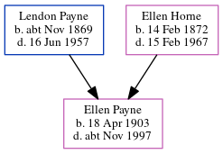

Ellen Barbara Payne 1903 - c1997
[ Home ] | [ Calendar ] | [ Surnames Index ] | [ Census Index ] | [ Family History ]A wool shop's assistant and the child of Lendon Payne (a postman) and Ellen Horne, Ellen Payne, the first cousin twice-removed on the father's side of Nigel Horne, was born in Wellingborough, Northamptonshire, England on Apr 18, 19031,2,3.
During her life, she was living at 71 Grange Road, Margate, Kent, England on Apr 2, 19114; and at 24 Tudor Court North, Wembley, London, England on Sep 29, 19391 (the same place as her father had been living in 1938).
She died c. Nov 1997 in Worthing, West Sussex, England3.
Parents
- Lendon Goodwin was born c. Nov 1869
- Ellen Mary Ann was born on Feb 14, 1872
Citations
- 1939 Register - Findmypast (was recorded at this address)
- England & Wales births 1837-2006 - Findmypast
- England & Wales deaths 1837-2007 - Findmypast
- 1911 Census for England & Wales - Findmypast (was age 7 and the daughter of the head of the household)
Media
1911 Census for England & Wales - GBC/1911/RG14/04489/0513/5
1939 Register Transcription - TNA-R39-0953-0953A-008-39
England & Wales births 1837-2006 - BMD/B/1903/2/AZ/000470/055
England & Wales deaths 1837-2007 - BMD/D/1997/12/82133240
Family Tree
Generated by ged2site. Last updated on Jun 11, 2024